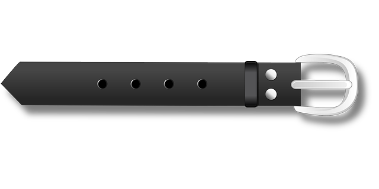

|
|
In light of the media surge caused by Kotalia, and the miracle effects that this device advertises, we decided to take a serious interest in it in order to see more clearly. The belt proposes to improve our well-being through “quantum stimulation of your intestinal neurons”. However, some people complain of violent side effects...
First of all, it doesn't mean "quantum stimulation" at all. We haven't found anything in the scientific literature that talks about quantum stimulation. Furthermore, what we know about intestinal neurons is insufficient to consider any intervention on them.
Never mind, let’s take PureTech’s word for it. Let's seriously test this device. To do this, we recruited 23 volunteers who wore it constantly for two weeks. Half we gave a real Kotalia, the other a belt looking exactly like it.
|
 Kotalia |
Common belt |
Our volunteers didn't know which belt they got. Everyone had obviously heard of the Kotalia phenomenon. The instructions were to carefully observe their mood swings. The volunteers reported their mood regularly via their smartphones.
Ultimately, the results are disappointing. Whether or not the volunteers had a Kotalia: there was no difference in mood between the two groups!
Ultimately, we can only warn the population about the potential scam that Kotalia represents. It is carried by a brilliant marketing coup from the company PureTech. The danger of this system is that it diverts sick people from real treatments that have proven their effectiveness. Both the primary and secondary effects are to be attributed to a placebo. Or worse, collective hysteria.
Bottom line: The Kotalia serves no purpose other than as a belt.
| * AID is a non-profit association which strives to provide objective information to the population. It fights against disinformation and the abuses of certain unscrupulous manufacturers surfing on people's hopes and fears. The association is made up of doctors working on a voluntary basis with the sole aim of providing reliable information. |
Useful links: WHO CNRS CIRC INSERM Institute Pasteur